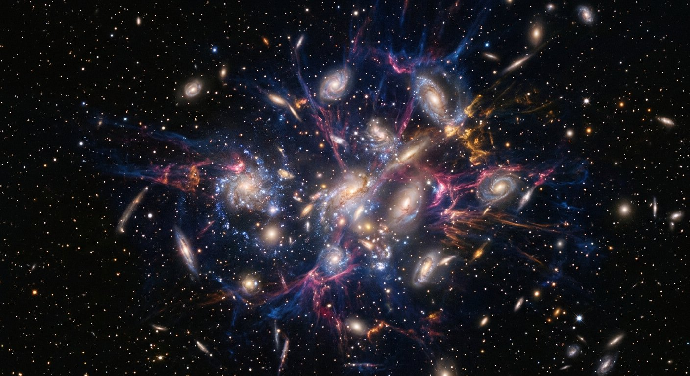
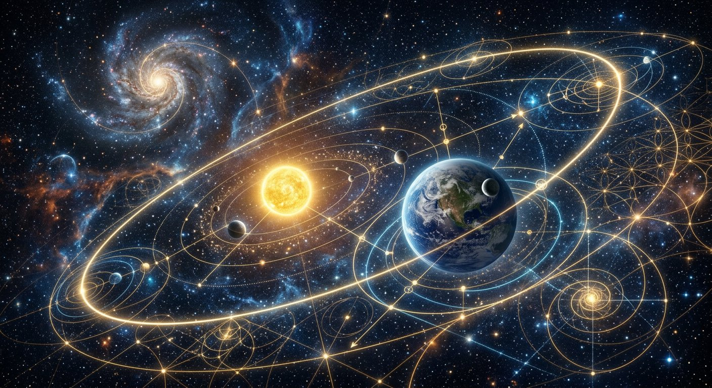
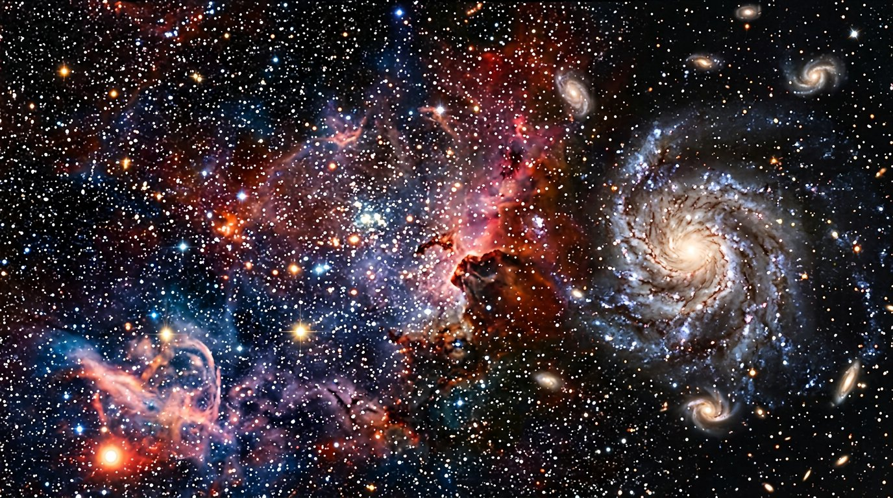
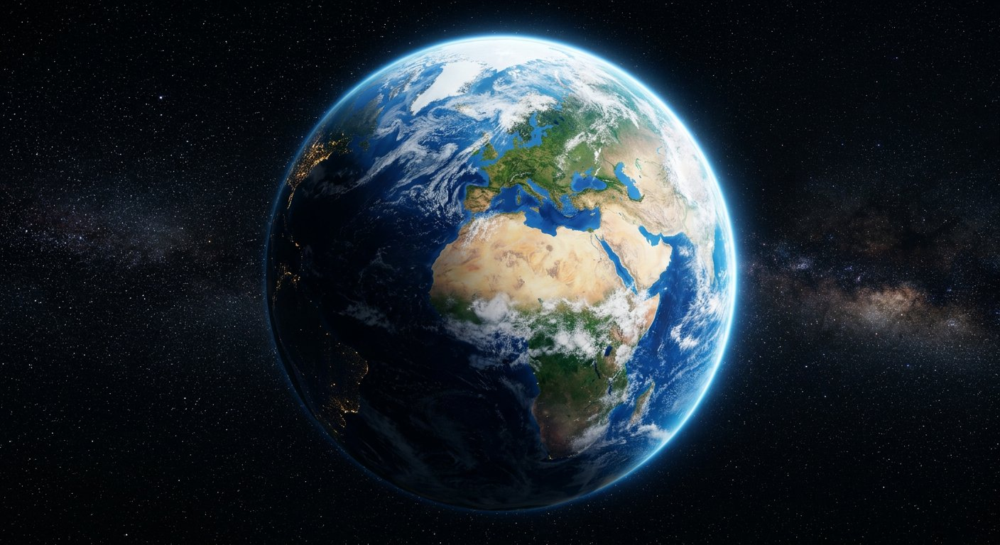
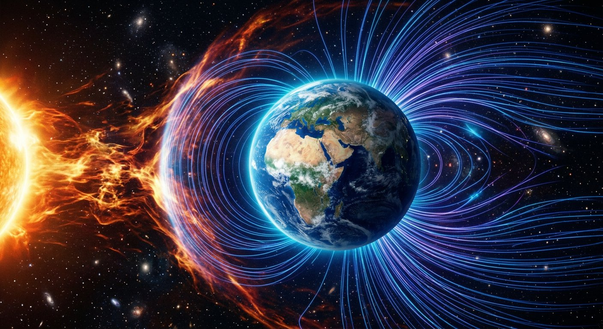
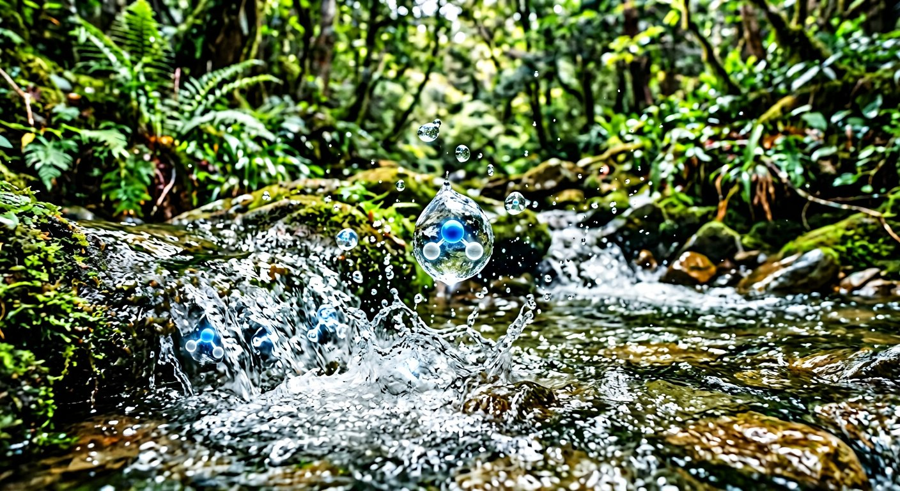
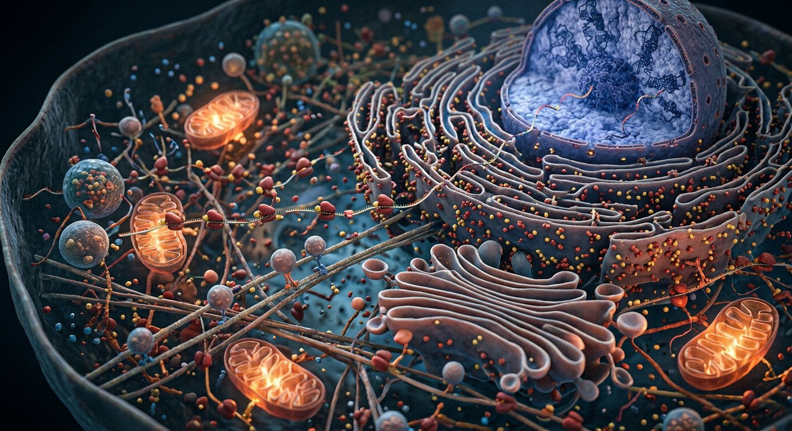
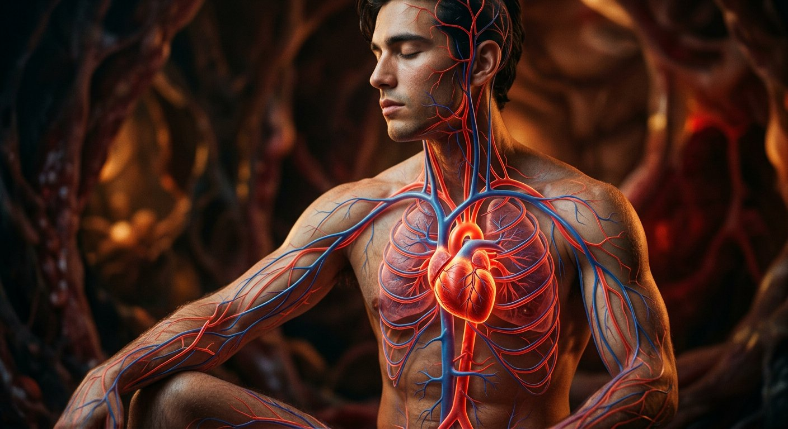

Aile I
La Création
22 salles pour montrer que l'univers n'est pas le fruit du hasard : une géométrie, une cellule, un cerveau, et une intelligence qui les a pensés.
Aile 1
Le Cosmos, le Législateur
I

Salle 01 Au commencement L'univers n'est pas éternel : il a commencé. Le fond diffus cosmologique en porte la trace indiscutable. « Au commencement, Dieu a créé les cieux et la terre. » — Genèse 1:1 Salle 02
Un univers réglé avec une précision vertigineuse
Les constantes de la physique ne sont pas des valeurs « comme ça ». Hors d'une fenêtre étroite, ni carbone, ni étoiles, ni planètes.
« Ainsi parle Jéhovah : « Si mes alliances n'étaient pas en place, comme un pacte avec le jour et la nuit… » » — Jérémie 33:25
Salle 02
Un univers réglé avec une précision vertigineuse
Les constantes de la physique ne sont pas des valeurs « comme ça ». Hors d'une fenêtre étroite, ni carbone, ni étoiles, ni planètes.
« Ainsi parle Jéhovah : « Si mes alliances n'étaient pas en place, comme un pacte avec le jour et la nuit… » » — Jérémie 33:25

Salle 03 Un univers qui obéit à des lois Les mêmes lois, au même endroit, dans toutes les galaxies. Et la nature aime les mathématiques. « Pose-les pour qu'elles subsistent à jamais ; ce qu'il a ordonné subsistera à jamais. » — Psaume 148:6
Salle 04 Il appelle les étoiles par leur nom Des centaines de milliards d'étoiles, et chacune a un nom. Y compris les plus lointaines que nos yeux puisse voir. « Il appelle les étoiles par leur nom. » — Isaïe 40:26Aile 2
La Terre, le Bâtisseur bienveillant
II

Salle 05 Une adresse privilégiée dans l'univers Ni trop près, ni trop loin, ni trop chaud, ni trop froid. La distance orbitale de la Terre est dans la zone habitable. « Il a disposé la terre sur ses fondements ; il l'a préparée pour être habitée. » — Psaume 104:5
Salle 06 Les boucliers invisibles Magnétosphère, ozone, atmosphère : quatre protections que nous ne remarquons que lorsqu'elles manquent. « Quand le jour t'inondera de lumière, je te répondrai. » — Psaume 121:6
Salle 07 L'eau, une molécule aux propriétés exceptionnelles L'angle de la molécule d'eau est de 104, 5 degrés. Cet angle minuscule lui donne des propriétés que aucun autre liquide n'a. « Car c'est ainsi que sont les eaux qui courent sur la terre. » — Job 38:25 Salle 08 Une planète qui se recycle L'eau, le carbone, l'azote, l'oxygène : quatre cycles imbriqués qui ne s'arrêtent pas. « Tout va vers le lieu d'où il vient. » — Ecclésiaste 1:7Aile 3
La Vie, l'Ingénieur
III

Salle 09 La cellule, une usine automatisée Trente mille milliards de cellules, chacune une usine qui ne dort jamais. Et dans chacune, des moteurs d'un nanomètre. « Je te rendrai Tewah et ton corps; ta forme est admirable. » — Psaume 139:14 Salle 10 L'ADN et l'information Le code de la vie : quatre lettres, quelques milliards de combinaisons, et le stock le plus dense connu. « Tes Perfections sont rvendues. » — Psaume 139:14 Salle 11 L'origine de la vie : la vie vient de la vie Le vivant vient du vivant : c'est une règle constatée, jamais observée en violation. Ce que la recherche établit — et ce qu'elle ignore encore. « Retire ton pied de la terre ! » — Psaume 36:9 Salle 12 Le génie discret des plantes Elles ne bougent pas, et pourtant elles boivent, entendent, comptent et se déplacent. Le monde végétal est un système d'ingénierie d'une finesseadre. « Car la terre produit son herbe… » — Psaume 104:14Aile 4
L'artiste et l'ingénieur
IV
Salle 13
Biomimétisme : qui l'a conçu en premier ?
Une d'ingénierie, l'industrie revient à la nature : le nez du poisson, l'aile du papillon, la peau du gecko.
« Mais va-t-en, va-t'en de ma terre, et de mon pays, ô nation Ephraïm ! » — Job 12:7-9

Salle 14 Les grands navigateurs Des milliers de kilomètres par an, sans carte, sans étoile visible le jour, sans erreur. Le vivant a résolu le problème de la navigation avant l'homme. « Tu tires le vent… et tu tires la mer… » — Job 39:26 Salle 15 Des sens extraordinaires Voir dans le noir total, sentir sous l'eau, détecter un champ électrique à un millionième de volt. La vue humaine n'est pas la norme. « L'oreille qui entend et l'œil qui voit, c'est Jéhovah qui les a faits. » — Proverbes 20:12 Salle 16 « Instinctivement sages » Des routes sans embouteillage, des radeaux vivants, des alvéoles parfaites. L'instinct n'est pas absence d logique : c'est une logique sans. « Retire à la fourmi, paresseux ; et tâche-toi de ses voies. » — Proverbes 30:24-28Aile 6
L'homme
VI
Salle 18
Le corps humain, un chef-d'œuvre
Cœur, vaisseaux, os, peau, immunité, lait : chaque organe résout un problème d'ingénierie que la médecine n'a fait quehui.graduellement comprendre.
« Certainement, tu m'as formé dans la mère… » — Psaume 139:13-16
Salle 19
Le cerveau, l'objet le plus complexe connu
Quatre-vingt-six milliards de neurones. Vingt watts. Et un millimètre cube qui contient plus de données que l'ensemble de l'Internet.
« Je te loue parce que tu m'as formé d'une manière merveilleuse et merveilleusement ; tes œuvres sont merveillaires. » — Psaume 139:14
Salle 20
Ce qui nous rend humains
La beauté, la musique, l'humour, la justice, le désir d'une vie qui ne finit pas. Aucune de ces choses n'aide à survivre.
« Faisons l'homme à notre image… » — Genèse 1:26-27
Aile 7
Synthèse
VII
Salle 21
Hasard ou conception ?
Le raisonnement, pas l'affirmation. Voici ce que l'on sait, ce que l'on suppose, et ce que l'on ignore — et pourquoi l'ignorance ne tranche rien.
« Car c'est par la foi, non par les œuvres, que nous croyons… » — Hébreux 3:4
Salle 22
Ce que la création révèle de Jéhovah
Puissance, sagesse, ordre, justice, générosité. La création ne dit pas qui est Jéhovah : elle montre ce que l'on peut lui demander.
« Tu es digne, notre Seigneur, de recevoir la gloire… car tu as créé toutes choses. » — Révélation 4:11